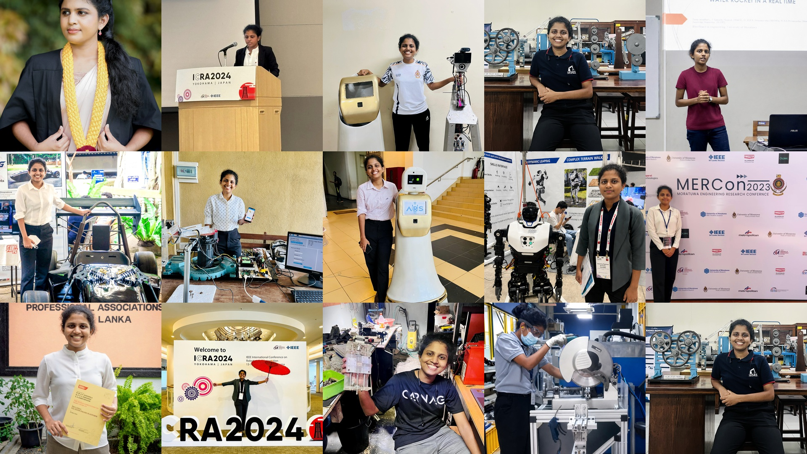

Anurisha Dunuwila
I'm a Ph.D. Candidate
About
Ph.D. candidate with 4+ years of multidisciplinary research and engineering experience in mechanical, robotics, and system integration. Skilled in designing, developing, simulating, and testing systems with hardware, software, and control components.
Mechanical Engineer & Mechatronics Researcher.
Ph.D. Candidate in Mechanical Engineering at Virginia Tech, specialized in acoustics, robotics, and biomaterial-based control systems.
- Degree: Ph.D. Candidate (Expected 2029)
- University: Virginia Tech
- City: Blacksburg, VA, United States
- Study: Mechanical Engineering (Mechatronics)
- Email: anurishadunuwila@vt.edu
Currently conducting research on acoustics, fluid dynamics, vibration, robotics, and bio-sample manipulation at Virginia Tech's Acoustics and Functional Materials Laboratory. Holds a First Class Honours B.Sc. Eng. from the University of Moratuwa, Sri Lanka, where she graduated as the highest-ranking student in her stream. Experienced across embedded systems, industrial automation, and medical/service robotics, with three IEEE conference publications to date.
Years Experience research & engineering
Projects research & personal
Publications IEEE conferences
Awards & Honors academic & competitions
Skills
Core competencies across programming, engineering tools, and hardware/embedded systems
Programming & Software
Engineering & Simulation
Hardware & Embedded Systems
Resume
Ph.D. candidate in Mechanical Engineering (Mechatronics) with research and industry experience spanning acoustics, robotics, embedded systems, and industrial automation.
Summary
Ph.D. candidate with 4+ years of multidisciplinary research and engineering experience in mechanical, robotics, and system integration. Skilled in designing, developing, simulating, and testing systems with hardware, software, and control components.
- anurishadunuwila@vt.edu
Education
Ph.D. in Mechanical Engineering
Aug. 2024 - Present (Expected May 2029)
Virginia Polytechnic Institute and State University (Virginia Tech), Blacksburg, VA
Cumulative GPA: 3.97/4.0 (after 4 semesters).
- ME 5554 – Applied Linear Systems
- ME 5724 – Advanced Instrumentation
- ME 5804 – Actv Matls/Smart Struct-I
- ME 5734 – Advanced Engineering Acoustics
- ME 5794 – Optimization Tech In Eng
- ME 5984 – Ultrasound Imaging
- ME 5735G – Advanced Mechatronics
- STAT 5615 – Statistics in Research
B.Sc. Eng. (Hons.) Mechanical Engineering, Mechatronics
Oct. 2018 - Jul. 2023
University of Moratuwa (UoM), Moratuwa, Sri Lanka
Cumulative GPA: 3.95/4.0 | Highest ranking student in stream | First class honors degree. Relevant coursework: Robotics and Autonomous Systems.
- ME 2023 – Manufacturing Engineering I
- ME 2170 – Manufacturing Engineering II
- ME 2080 – Design of Machine Elements
- ME 2280 – Sensors/Actuators and Smart Systems
- ME 4090 – Industrial Automation
- ME 4310 – Micro/Nano Electro Mechanical Systems & Technology
Professional Experience
Graduate Research Assistant
May - Aug. 2025 & Jan. 2026 - Present Part-Time
Virginia Tech, Blacksburg, VA, United States
- Conduct research in acoustics, fluid dynamics, vibration, robotics, and bio-sample manipulation at the Acoustics and Functional Materials Laboratory, under the supervision of Dr. Zhenhua Tian
- Design, fabricate, and experimentally characterize acoustically driven devices, including membrane vibration systems, microstructures, miniature robots, and micronozzles, using laboratory instrumentation and computational tools such as COMSOL, MATLAB, and Python
- Reviewed five manuscripts for Springer Nature "Scientific Reports" journal (Impact Factor 4.3)
- Maintain laboratory operations, including routine equipment inspections, keeping assigned lab space organized, and managing updates to the laboratory website
Graduate Teaching Assistant
Aug. 2024 - Dec. 2025 Part-Time
Virginia Tech, Blacksburg, VA, United States
- Instructed laboratory sessions and graded assignments for ME-4005: Mechanical Engineering Laboratory (Spring 2025) and ME-2004: Engineering Analysis Using Numerical Methods (Fall 2025)
- Guided students through beam vibration, PID controller development, Wheatstone bridge design, airfoil design and testing, MATLAB programming, and numerical methods
Embedded Systems Engineer
Aug. 2023 - Jul. 2024 Part-Time
Robotic Assistance Devices, Remote - Michigan, United States
- Designed and deployed Qt graphical user interfaces (GUIs) and firmware with Fast DDS protocols for robotic products
Trainee Automation Engineer
Mar. - Aug. 2022 Full-Time
MAS Holdings, Biyagama Exporting Zone, Sri Lanka
- Engineered an Automated Sewing Training System, achieving a 20% efficiency improvement, and a Garment Counting Automation system processing over 5,000 garments per hour compared to manual methods, and renovated the Fire Register and Oviklo systems for barcode label generation
- Developed HMIs (Samkoon, Kinco) for dye chemical applicators and dip dye machines, configured Vigor PLCs, wired industrial control circuits, and utilized Microsoft services including Power Automate, Power Apps, and Lists
Portfolio
A selection of personal and academic engineering projects spanning acoustics, robotics, automation, and sustainable design.
- All
- Acoustics & Simulation
- Robotics & Controls
- Automation & IoT
- Healthcare & Sustainability
{kind=link}
{kind=link}
{kind=link}
{kind=link}
{kind=link}
{kind=link}
{kind=link}
{kind=link}
{kind=link}
{kind=link}
{kind=link}
Expertise
Core areas of research and engineering expertise
Robotics & Automation
Design and control of robotic systems, from ROS-based navigation and SCARA manipulators to industrial automation and PLC/HMI integration
Acoustics & Vibration Analysis
Membrane vibration characterization, acoustic vortex beam simulation, and ultrasound-driven actuation systems
Simulation & Modeling
COMSOL Multiphysics, MATLAB/Simulink, and gradient-based optimization for control systems, MEMS, and wave propagation problems
Embedded Systems & Firmware
Qt GUI development, firmware, and Fast DDS/CAN communication for microcontroller-based robotic and mechatronic products
CAD & Mechanical Design
SOLIDWORKS and AutoCAD 2D/3D design, prototyping, and fabrication (3D printing, milling, laser cutting, sheet bending)
Research & Technical Writing
Peer review for IEEE and Springer Nature journals, and authorship of IEEE conference publications in robotics and MEMS
Awards
Academic honors and competition placements
Mobil Award for the Best Mechanical Engineering Final Year Project 2021/2022
Awarded to the group of Mechanical Engineering students who obtained the highest average marks collectively, with each student in the group obtaining a grade of "A-" or above for the module ME 4202 - Design/Research Project.
First Place – IMechE SL Group Chairman's Award for the Project with Best Entrepreneurship Potential 2023
Awarded for the final year undergraduate research project: Design and Development of a Multitasking Medical Service Robot for Hospital Environment.
Second Place at Formula Bharath 2022 – Class 1 – Electric Category
Won second place in the overall competition, including second place in both the Business Plan Presentation Event and the Concepts & Goals Management Event, as part of FalconE Racing.
Merit Award – All-Island Health Innovation Award 2020
Won a merit award in the university category for designing a sustainable Biomedical Waste Management System.
Participation – International Asteroid Search Campaign
Involved in recognizing near-Earth objects and main-belt asteroids by participating in the analysis of images from Pan-STARRS, as part of SEDS Mora.
7th Place – The Design Competition to Fight COVID-19
Won 7th place for the design of a Sustainable Bio-Medical Waste Management System.
Top 20 Innovative Ideas – InnovMind IDEATHON
Awarded for an IoT-based Touchless Elevator System, developed at the University of Moratuwa.
First Runner-Up – Tracking Device Design Competition
Designed and fabricated a device to calculate the distance, altitude, and maximum speed of a water rocket in real time.
Dean's List – Semesters 2 through 8
Recognized on the Dean's List across seven consecutive semesters of undergraduate study for sustained academic excellence.
Excellent Student Award – Huawei AppsUP, Asia Pacific Region
Recognized as an Excellent Student in the Asia Pacific region of Huawei's AppsUP developer competition.
Publications
Peer-reviewed papers in robotics, acoustics, and MEMS — full list on Google Scholar
Contact
Feel free to reach out via email or connect on LinkedIn
anurishadunuwila@vt.edu